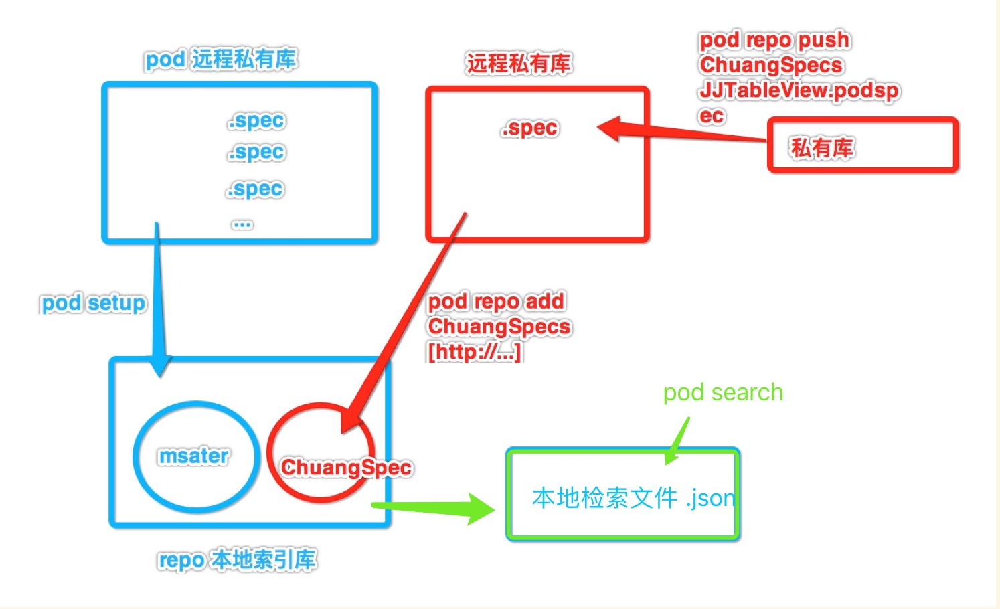
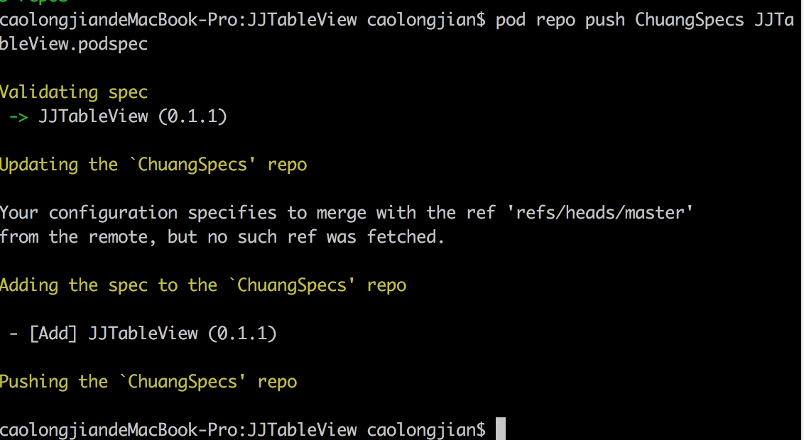

组件化 - 远程私有库
远程私有库相对于本地私有库多了许多配置，对 .spec 文件的配置就显得尤为重要了许多
首先，一般采用pod库的形式来集成的远程私有库就需要我们对 cocoapods 的工作有一定的认识。

一、 创建远程私有索引库
在git托管平台创建 ChuangSpecs 工程 作为远程索引库 git 地址为
http://10.10.1.18/caolongjian/ChuangSpecs.git本地创建私有库索引仓库
pod repo add ChuangSpecs http://10.10.1.18/caolongjian/ChuangSpecs.git
注意： 若使用 git@10.10.1.18:caolongjian/ChuangSpecs.git 需配置SSH

二、 将本地项目推送到远程
- 在git托管平台创建 JJTableView 工程
并将本地的仓库和远程的仓库进行关联
git remote add origin http://10.10.1.18/caolongjian/JJTableView.git
git push -u origin master
注意： 第一次push的时候,加上-u参数,Git就会把本地的master分支和远程的master分支进行关联起来,以后的push操作就不再需要加上-u参数了
三、 配置 JJTableView.podspec 文件

1. 校验一下我们.spec文件是否合法
pod lib lint
若发现如下 n 多错误，请根据WARN 修改（泪奔，一开始忽略了警告，直接修改ERROR）默认Swift3.2 验证，代码是在Swift4.0下编写运行
-WARN | [iOS] swift: The validator used Swift 3.2 by default because no Swift version was specified. To specify a Swift version during validation, add the
swift_versionattribute in your podspec. Note that usage of the--swift-versionparameter or a.swift-versionfile is now deprecated.
错误：❌

解决方案,修改验证编译环境为 Swift 4.0

2. tag 标签
git tag 0.1.0
git push --tags
3. 校验远程 .spec文件是否合法
pod spec lint

4. .repo 提交到远程私有索引库
我们要将 JJTableView.podspec 提交到我们的远程私有索引库(ChuangSpecs)当中去，使用pod repo push [远程私有索引库名称] [框架名称的描述文件]
$ pod repo push ChuangSpecs JJTableView.podspec

对应远程索引库：

对应本地索引库：

使用 pod search JJTableView 搜索

四、 主工程使用组件
配置 podfile 文件
默认指定源是Cocoapods的官方索引库，需要添加自己的远程私有库添加source，记得默认源也要添加上
source 'https://github.com/CocoaPods/Specs.git' source 'http://10.10.1.18/caolongjian/ChuangSpecs.git'pod 'JJTableView'
#pod 'JJTableView', :path => '../Lib/JJTableView' pod 'JJTableView', '0.1.4'
执行 pod install
附问题：
问题一：pod lib lint 验证不通过 出错
Swift 验证版本问题，根据提示添加 swift_version 属性
问题二：二级目录没有显示出来

修改 s.source_files 加上 .swift

多级目录提交, 多文件之间尽量不要相互依赖
s.subspec 'CellKit' do |cellKit|
cellKit.source_files = 'JJTableView/Classes/JJTableView/CellKit/**/*'
cellKit.public_header_files = 'Pod/Classes/**/*.h'
cellKit.dependency 'AFNetworking', '~> 2.3'
end